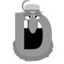

下列说法中的符合文意的一项是：

A
过去把天空中一切云雾状的天体都说成是星云，现在只把真正由气体和尘埃组成的云雾状天体称做星云。

B
过去把天空中一切云雾状的天体都说成是星云，其实离我们非常遥远的银河系以外并没有星云，那只是些恒星，只因为距离遥远，看起来呈云雾状罢了。

C
天文学史上早期发现的星云，其实并不是星云，而是与银河系类似的庞大的恒星系统。
- 
D
弥漫星云是由气体和尘埃组成的，具有不规则的形状，一般没有明确的边界，外貌呈云雾状的物质。
查看正确答案
正确答案：D
对照原文，A项说星云是“云雾状天体”不确切；B项说法有误，银河系以外, 并非“没有星云”; C项说法笼统，早期发现的星云，有一部分是“真正的星云”。